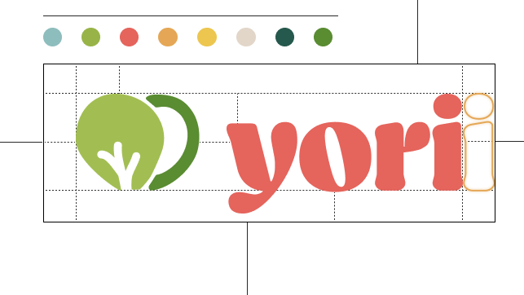

Logo
Yori (요리) meaning “to cook” in Korean language
Leaf-heart symbol - this icon is to portray a vibrant mood and the subtle heart shape with the leaf is to showcase our app promoting healthy lifestyle
Warm, peach undertone red for the wordmark - as this colour associates with movement and excitement, we also wanted to encourage appetite
Uniform kerning - we created the spacing between the letters in the logo and our wordmark with the letter "i" as reference, to improve readability and visual appeal. This is in order to create a clean and professional look, as well as to help ensure that the logo is legible at different sizes and in different applications.